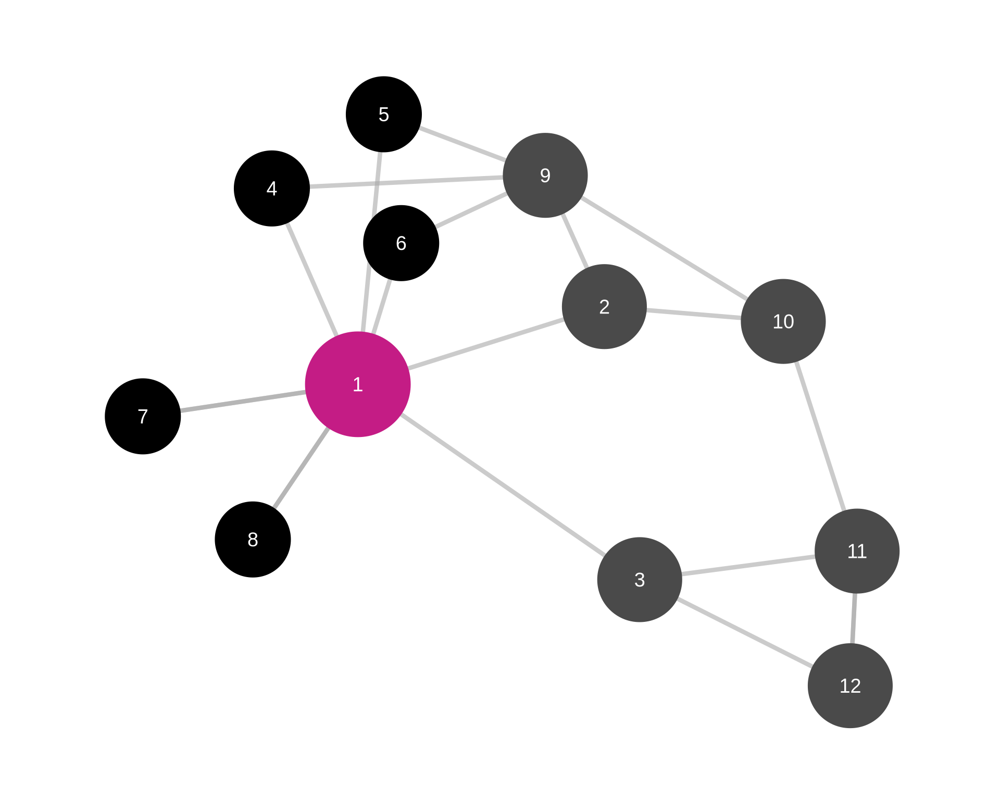
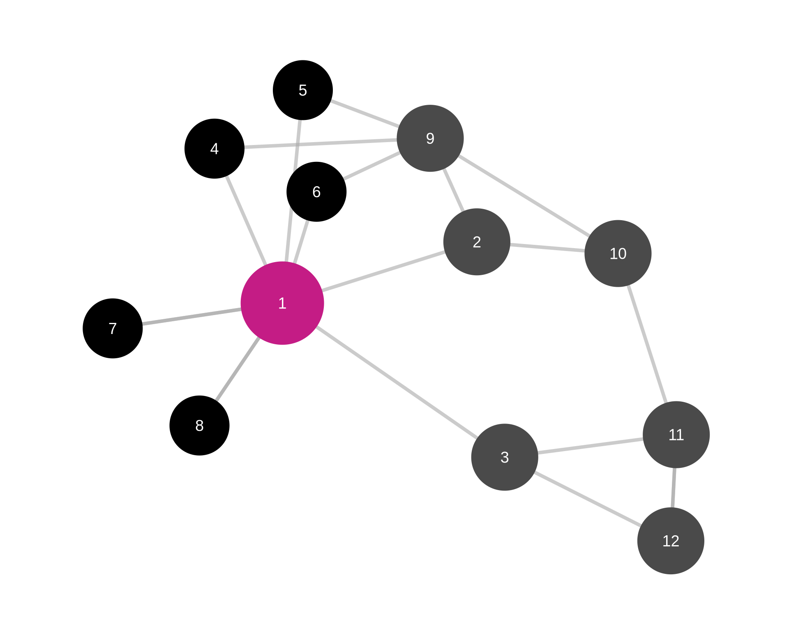
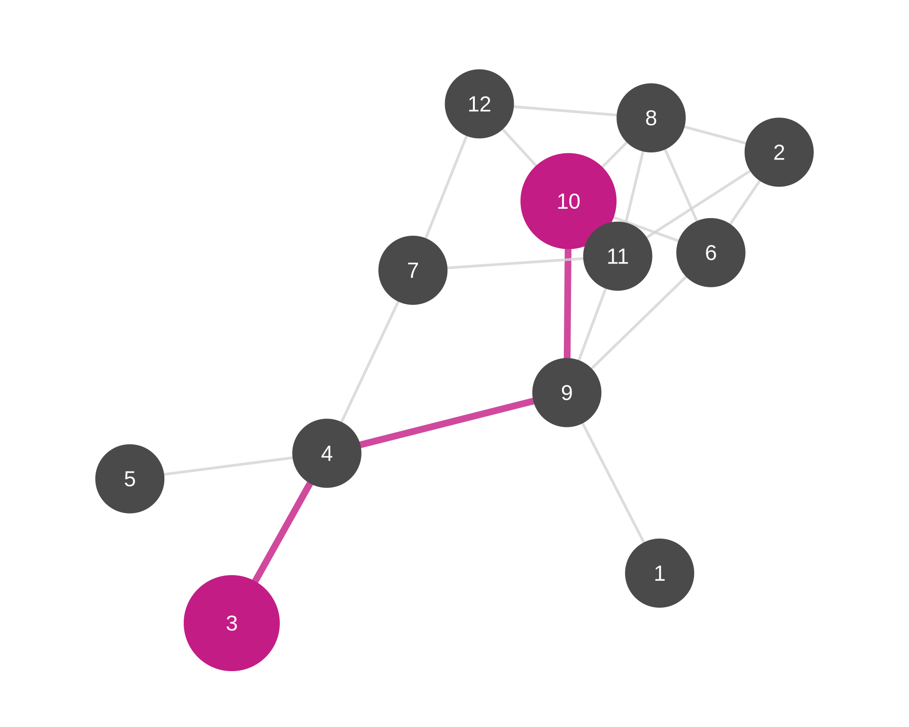
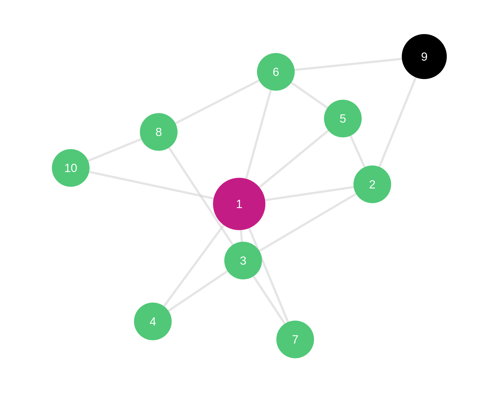
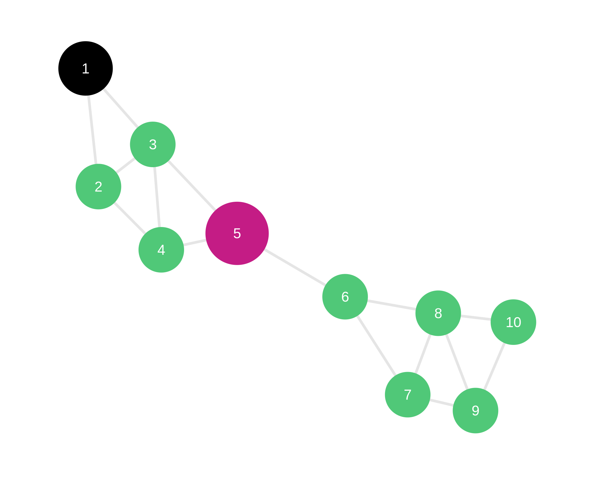
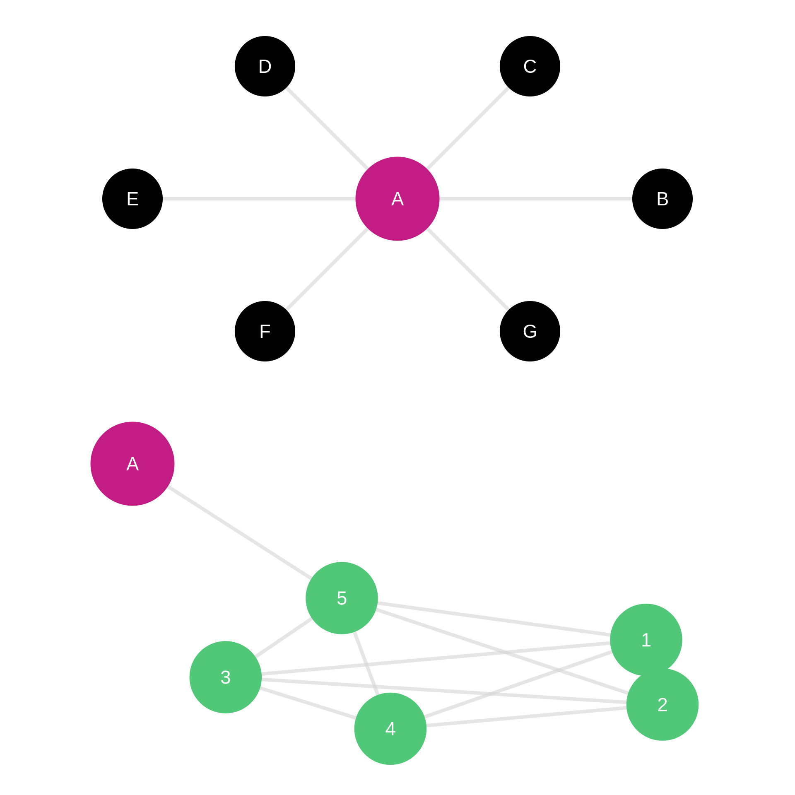
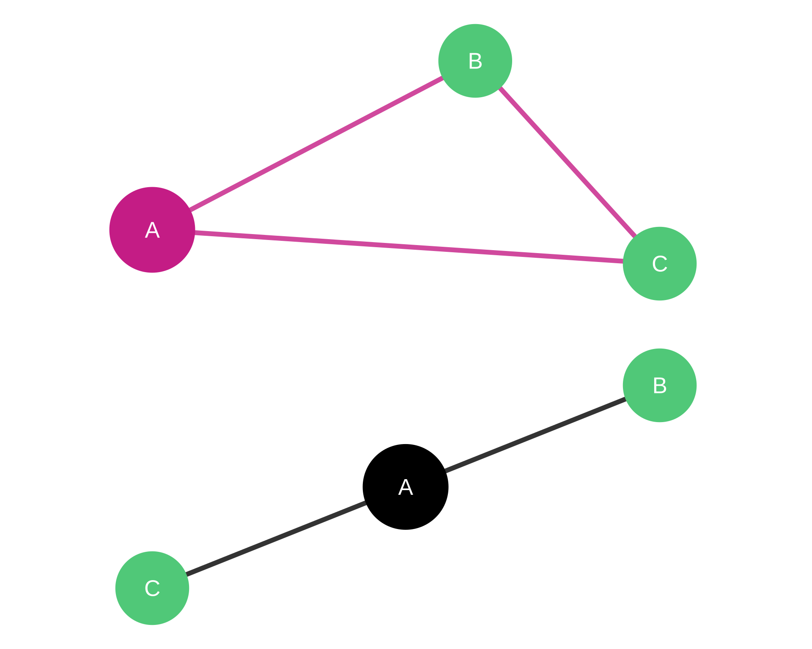
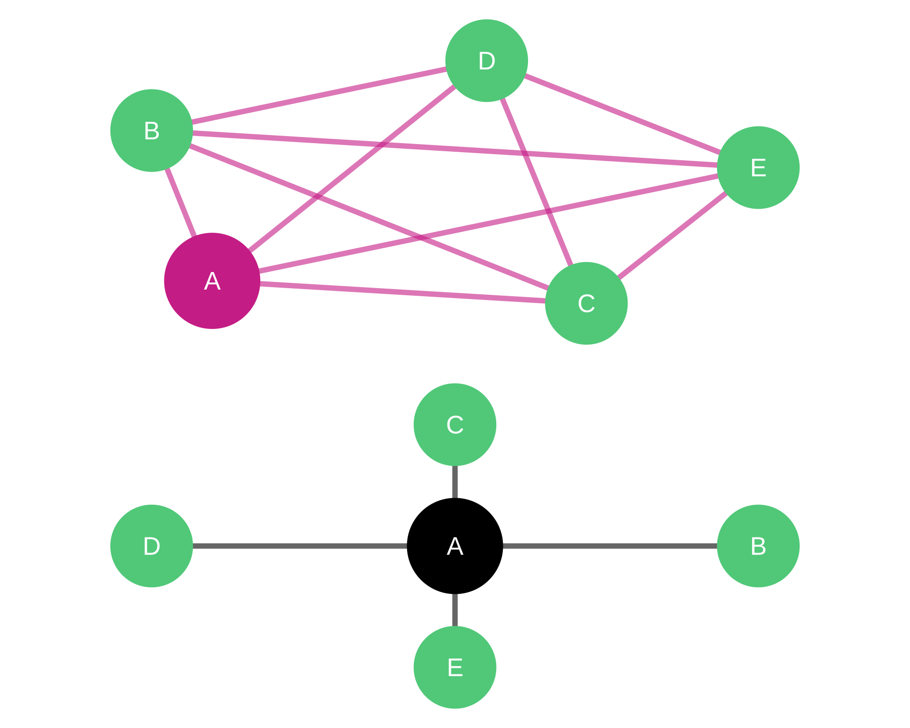

Measuring Importance and Influence in Networks
The Fundamental Question:
Which node is most important in this network?
Two Core Perspectives:
Important
Key Insight: “Importance” depends on context and mechanism
| Measure | Focus | Question |
|---|---|---|
| Degree | Direct connections | Who knows the most people? |
| Closeness | Reachability | Who can reach everyone quickly? |
| Betweenness | Brokerage | Who controls information flow? |
| Eigenvector | Connection quality | Who is connected to important others? |
| Clustering | Local cohesion | How interconnected is the neighborhood? |
| PageRank | Prestige | Who receives quality endorsements? |
Caution
Each measure captures different aspects of structural importance
Definition: Number of direct connections
\[C_D(i) = k_i\]
where \(k_i\) is the number of edges incident to node \(i\)
In Directed Networks:
Normalized Degree:
\[C_D^{norm}(i) = \frac{k_i}{n-1}\]
where \(n\) is network size
Undirected Networks:
Directed Networks:
Warning
Limitations: Ignores indirect connections and network structure beyond immediate neighbors
R&D Lab Technical Advice Network
High Degree Scientist (sought by 18 colleagues for advice)
Low Degree Scientist (consults with 3 colleagues)
Real Pattern: Power-law distribution—few scientists provide most technical advice

Note
Magenta node: High degree (central expert)
Black nodes: ‘7’ is a low degree node example (peripheral)
Definition: Inverse of average distance to all other nodes
\[C_C(i) = \frac{n-1}{\sum_{j \neq i} d(i,j)}\]
where \(d(i,j)\) is the shortest path distance from \(i\) to \(j\)
Alternative (Harmonic Mean):
\[C_C^{harm}(i) = \sum_{j \neq i} \frac{1}{d(i,j)}\]
Intuition: How quickly can node \(i\) reach everyone else?

Note
Magenta path: Shortest path between nodes 3 and 10 is through 4 and 9
Closeness considers the shortest path between node \(i\) and all other nodes in the network
What High Closeness Means:
Applications:
Caution
Limitations: Requires connected network; sensitive to network size; ignores edge weights initially
Engineering Consulting Firm
High Closeness Engineer (avg distance = 2.1)
Low Closeness Engineer (avg distance = 4.8)
Strategic Implication: Closeness predicts coordination effectiveness

Note
Magenta node: High closeness (central position)
Black node: Low closeness (peripheral position)
Definition: Proportion of shortest paths passing through a node
\[C_B(i) = \sum_{j<k} \frac{g_{jk}(i)}{g_{jk}}\]
where:
Normalized:
\[C_B^{norm}(i) = \frac{2 \cdot C_B(i)}{(n-1)(n-2)}\]
What High Betweenness Means:
Strategic Value:
Important
Risk: Bottleneck position—removal disrupts network flow
Pharmaceutical R&D Network
High Betweenness Scientist (bridges Chemistry & Biology labs)
Low Betweenness Scientist (within dense cluster)
Finding: High betweenness predicts cross-disciplinary breakthroughs

Note
Magenta node: High betweenness (broker position)
Black node: Low betweenness (embedded in group)
Definition: Centrality proportional to sum of neighbors’ centralities
\[x_i = \kappa^{-1} \sum_{j} A_{ij} x_j\]
In matrix form: \(\mathbf{Ax} = \kappa \mathbf{x}\)
where \(\mathbf{x}\) is the leading eigenvector of adjacency matrix \(\mathbf{A}\)
Key Insight: You’re important if you’re connected to important people
Recursive Logic: Node centrality depends on neighbors’ centrality, which depends on their neighbors’ centrality, etc.
Degree vs. Eigenvector:
Example Scenarios:
Scenario A: High Degree, Low Eigenvector
Scenario B: Low Degree, High Eigenvector
Note
Classic Example: Craig Robinson (former Oregon State basketball coach) has high eigenvector centrality because he’s President Obama’s brother-in-law

Note
Top network (Scenario A): Node A (magenta) has high degree (6 connections) but low eigenvector centrality (connected to peripheral nodes shown in black)
Bottom network (Scenario B): Node A (magenta) has low degree (1 connection) but high eigenvector centrality (connected to highly central cluster shown in emerald)
Startup Funding Network
High Eigenvector VC Firm
Low Eigenvector VC Firm
Empirical Finding: High eigenvector centrality VCs achieve higher returns (network effects in syndication)
Definition: Proportion of neighbors that are also connected
\[C_{clust}(i) = \frac{2e_i}{k_i(k_i-1)}\]
where:
Interpretation: How interconnected is node \(i\)’s neighborhood?
Range: 0 (no neighbors connected) to 1 (all neighbors connected)
Key Insight:

Note
Top network (Closed triad): Node A (magenta) has clustering coefficient = 1.0. Both neighbors B and C (emerald) are connected to each other.
Bottom network (Open triad): Node A (black) has clustering coefficient = 0.0. Neighbors B and C (emerald) are not connected.
What High Clustering Means:
What Low Clustering Means:
Trade-off: Closure (trust, coordination) vs. Brokerage (novelty, diversity)

Note
Top network (High Clustering): Node A (magenta) is embedded in a dense, cohesive group where neighbors B, C, D, E (emerald) are highly interconnected. Closure benefits.
Bottom network (Low Clustering): Node A (black) bridges disconnected groups. Neighbors B, C, D, E (emerald) are not connected to each other. Brokerage opportunities.
Academic Research Networks
High Clustering Professor (clustering = 0.85)
Low Clustering Professor (clustering = 0.15)
Definition: Prestige based on quality of incoming links
\[PR(i) = \frac{1-d}{n} + d \sum_{j \in M(i)} \frac{PR(j)}{L(j)}\]
where:
Key Innovation: Endorsement from important nodes counts more
Origin: Google’s original ranking algorithm for web pages
The “Random Surfer” Model:
Advantages over Eigenvector:
Social Media Network Analysis
High PageRank Account
Comparison:
Marketing Insight: PageRank identifies true influencers, not just popular accounts
Application: Influencer identification, opinion leader detection, cascade prediction
Correlations and Divergences:
Often Correlated:
Can Diverge:
Recommendation: Calculate multiple measures; triangulate interpretations
Selection Guide:
| Use Case | Recommended Measure | Why |
|---|---|---|
| Identify popular individuals | Degree (in) | Direct connections matter |
| Find information hubs | Closeness | Quick access to all |
| Locate brokers | Betweenness | Control over flows |
| Detect prestigious actors | Eigenvector or PageRank | Quality of connections |
| Assess group cohesion | Clustering | Local density |
| Rank web pages | PageRank | Link endorsement |
| Predict influence spread | Eigenvector + Betweenness | Reach and position |
Important Distinction:
Centrality (Node-level):
Centralization (Network-level):
Formula (Freeman):
\[C = \frac{\sum_i [C_{max} - C_i]}{max\sum [C_{max} - C_i]}\]
Range: 0 (all equal) to 1 (perfect star)
Marketing:
Operations:
HR & Organizational Design:
Methodological Challenges:
Best Practices:
Important
Core Concepts:
Note
Practical Wisdom: